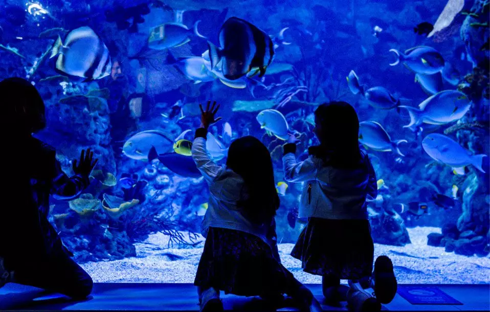
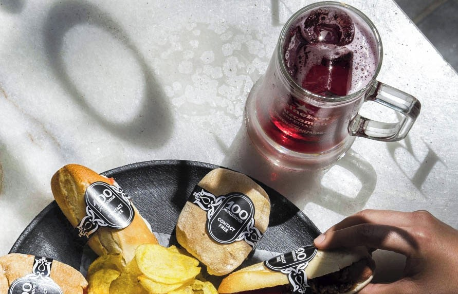

Bienvenidos a intu Xanadú
Más que un centro comercial. Tu centro de emociones donde las experiencias se fusionan.


intu Xanadú es un centro comercial ubicado en Arroyomolinos, Madrid, inaugurado en 2003. Cuenta con más de 220 tiendas, entre ellas El Corte Inglés, Zara, Primark y Apple Store, además de una amplia zona de restauración. Su gran atractivo es Madrid SnowZone, la única pista de esquí cubierta de España, junto con el Atlantis Aquarium, Cinesa Luxe y el centro de ocio Ilusiona. Ofrece más de 10.000 plazas de aparcamiento gratuito y está abierto los 7 días de la semana. Es un destino ideal para compras, ocio y entretenimiento familiar.